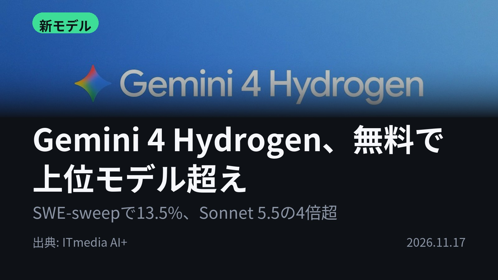
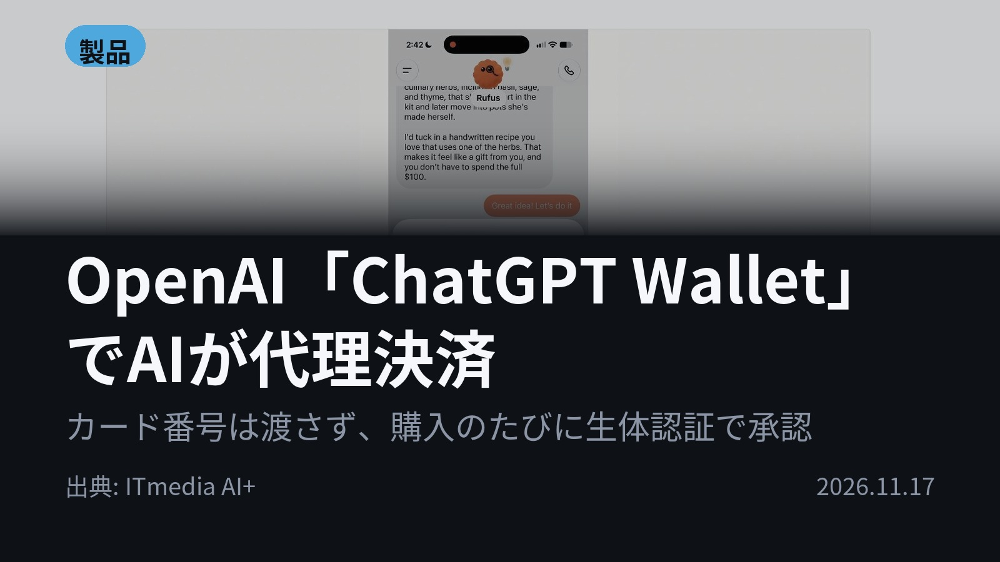
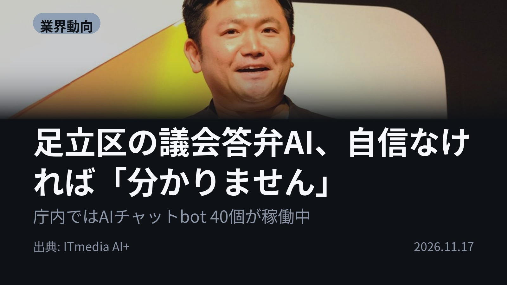
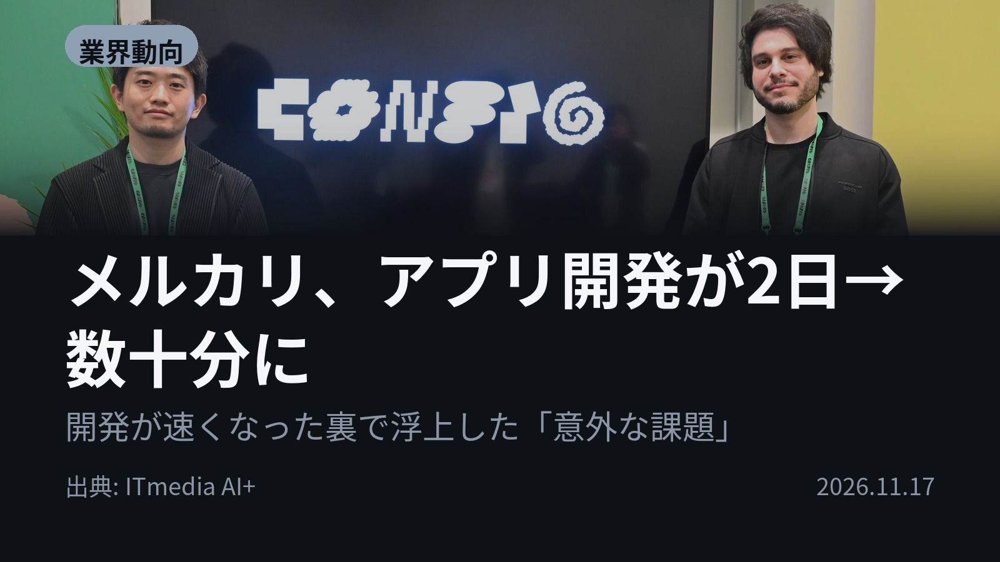

今日のAIニュース 下書き
2026-11-17 生成 11/18 02:56
⚠ ファクト照合で要確認の項目があります。
各ニュースの警告を確認してから投稿してください。
X（4投稿）
Gemini 4 Hydrogen、無料で上位モデル超え
原題: 「Gemini 4 Hydrogen」とは 性能とユースケースまとめ Googleの「誰でも使える」最新モデル

無料で使えるAIが、上位モデルを超えた。 Googleの「Gemini 4 Hydrogen」は総合指標で51点、上位のArgonの50点を上回った。 SWE-sweepは13.5%、Sonnet 5.5は3.1%。 #AI #Gemini（出典: ITmedia AI+）
重み 185 / 280（見た目 134字）
OpenAI「ChatGPT Wallet」でAIが代理決済
原題: OpenAI、AIエージェントが代わりに支払う「ChatGPT Wallet」 カード番号は渡さず、購入ごとに生体認証

AIが代わりに払うのに、カード番号はAIに渡さない。 OpenAIの「ChatGPT Wallet」は、購入ごとに生体認証で承認。店舗にも実際のカード情報は渡らない。 まず米国のChatGPT Pro加入者向け。 #AI #ChatGPT（出典: ITmedia AI+）
重み 209 / 280（見た目 133字）
足立区の議会答弁AI、自信なければ「分かりません」
原題: 自信がなければ「分かりません」──足立区が議会答弁AIにかけた“ガード” 「情報間違えれば区民に影響」の思い

間違えれば区民の生活を変えかねない。行政AIは誤りをどう防ぐ？ 足立区の議会答弁AIは、自信がなければ「分かりません」と答えるよう制約。参照資料はなるべく最新に限り、AIはたたき台作成まで。最後は職員が確認する。 #生成AI #足立区（出典: ITmedia AI+）
重み 242 / 280（見た目 132字）
メルカリ、アプリ開発が2日→数十分に
原題: メルカリ、アプリ開発「2日→数十分」へ 直面したAI時代の“意外な課題”とは？

アプリ開発が「2日→数十分」に。 メルカリが、アプリ開発にかかる時間を2日から数十分へ縮めた。 その一方で、AI時代の「意外な課題」にも直面したという。 #AI #メルカリ（出典: ITmedia AI+）
重み 181 / 280（見た目 100字）
要確認:
［固有名詞］メルカリ — この語が本文に見つかりません
Instagram（カルーセル 6枚）


無料ユーザーにも開放された新モデルが、総合指標で上位モデルを上回った。 今日は、AIに任せる範囲と、そのための安全策をめぐる4本です。 1. Googleの「Gemini 4 Hydrogen」は、最上位のCarbonを基に速度と効率を重視して調整したモデル。コンテキストは最大100万トークン、思考レベルはlow〜xhighの4段階から選べる。API料金は100万トークン当たり入力1.5ドル・出力7.5ドルで、無料枠もある。ただしターミナル操作などの3項目ではSonnet 5.5が上回った。(ITmedia AI+) 2. ChatGPT Walletでは、承認後に決済ネットワークが「決済トークン」（実際のカード情報の代わりに使う専用の番号）を発行する。Walletで承認しただけでは注文は確定しないので、店舗からの注文確認を確かめる必要がある。将来は利用額の上限などを決めて、購入をエージェントに任せる仕組みも計画中。(ITmedia AI+) 3. 足立区の議会答弁AIは、議員の質問から担当部署を振り分け、過去の答弁を参照して答弁案まで用意する。区民の声への対応では、氏名や住所を除いた意見だけをAIに渡す。庁内では、職員がGemini Notebookで作った40のチャットbotが稼働している。(ITmedia AI+) 4. メルカリのアプリ開発にかかる時間が「2日→数十分」になった。開発が速くなった一方で、AI時代の「意外な課題」にも直面したという。(ITmedia AI+) 今日の4本に共通するのは、性能が上がったAIにどこまで任せ、どこで人が確かめるかという点でした。 毎朝4本、AIニュースを要点だけまとめています。見逃したくない方はフォローを、あとで読み返したい方は保存をどうぞ。 #AI #生成AI #人工知能 #テクノロジー #AIニュース #ArtificialIntelligence #TechNews #ChatGPT #Gemini #OpenAI #Google #AI活用 #AIエージェント #業務効率化 #DX #Gemini4 #GeminiHydrogen #ChatGPTWallet #生体認証 #足立区 #自治体DX #メルカリ
953字（Instagram上限 2,200字）
この日の選定理由
Gemini 4 Hydrogen、無料で上位モデル超え
軽量モデルが総合指標で上位モデルを上回り、しかも無料ユーザーに開放されました。最先端に近い性能が誰でも使える段階に入っています。
OpenAI「ChatGPT Wallet」でAIが代理決済
毎週12億人が使うChatGPTが、商品の比較から購入の完了まで手がけることになります。AIエージェントによる買い物の安全の仕組みとして、業界の標準になる可能性があります。
足立区の議会答弁AI、自信なければ「分かりません」
誤った情報を出しやすいAIを、正確さが絶対条件の行政でどう使うかの実例です。「分からなければ答えない」制約と人の確認を前提にする設計は、他の組織でも参考になります。
メルカリ、アプリ開発が2日→数十分に
大手企業の開発現場でAIが作業時間をどこまで縮めたかを、具体的な数字で示す事例です。ただし本文の文字化けで、課題の中身は確認できません。